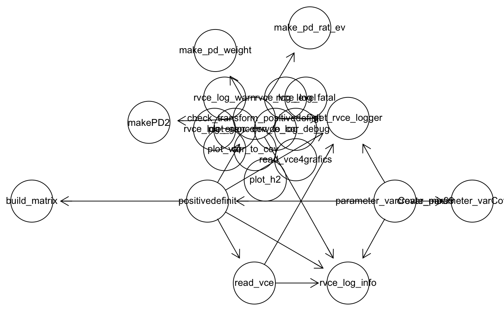

vignettes/getting_started_rvcetools.Rmd
getting_started_rvcetools.RmdThe package rvcetools is used to post-process and to work with results from programs that do variance components estimation (VCE). Initially, we limit our focus for result files from the program called vce.
Variance component estimation is the process of estimating scale parameters such as variance components from data. The parameter estimation uses linear mixed models to define the set of different random effects to which the observed variation should be attributed to.
Linear mixed effects models recently have gained some popularity outside of the area of animal breeding. But still there are not standard software packages around that can estimate variance components for very large datasets. Therefore, specialized softare programs are used for this task. These programs do not provide any features outside of the parameter estimation functionality. As a consequence of that results from the specialised programs must be read into systems such as R to do bending, plotting or other post-processing tasks.
The most central feature is to read in raw outfiles from the different variance components estimation programs. In the most basic case there is only one output file from one analysis. In more advanced analyses, there might be output files from repeated analyses of different sample data sets.
The package rvcetools contains a number of features already and they will hopefully grow over time. For the purpose of a genetic evaluation the most important feature is to read estimated variance components and to produce an input file for the software program that does the prediction of breeding values. This function is called parameter_varCovar_mix99(). All it needs is an input file and an output file and all steps in between will be done automatically. The functions envolved in all the steps are shown in the dependency graph below.

Currently the package can read VCE results from .csv files which are in a pre-defined format. For testing an example input file is included in the package available.
(s_input <- system.file("extdata","VCE_results.csv", package = "rvcetools"))
#> [1] "/private/var/folders/2v/jfsqj8zj2f122jcgy15nzfn00000gn/T/RtmpeGrh2V/temp_libpathc50b6cd40209/rvcetools/extdata/VCE_results.csv"The input data can be read using the function
(tbl_vce <- read_vce(psInputFile = s_input))
#> # A tibble: 6,414 x 9
#> type traits random_effect estimate STD_ERR_estimate model_name
#> <chr> <chr> <chr> <dbl> <chr> <chr>
#> 1 ratio caa residual 0.261 0.019575 <NA>
#> 2 cova… cac+c… residual 0 --- <NA>
#> 3 cova… cac+c… animal 0.0152 0.005221 <NA>
#> 4 gene… cac+c… animal 0.252 0.085193 <NA>
#> 5 vari… cac herdyear 0.0128 0.000740 <NA>
#> 6 cova… cac+c… herdyear 0.00092 0.001490 <NA>
#> 7 heri… caa animal 0.319 0.026249 <NA>
#> 8 ratio caa herdyear 0.420 0.015139 <NA>
#> 9 vari… cac residual 0.0271 0.001140 <NA>
#> 10 heri… cac animal 0.231 0.026163 <NA>
#> # … with 6,404 more rows, and 3 more variables: data_subset_number <chr>,
#> # used_seed <chr>, trait_combination <chr>When it comes to processing outputs of variance components estimation, it is useful to transform variance-covariance matrices into correlation matrices and the other way around. In most practical calses the matrices are small and hence a solution via iterative loops should be ok. An example is shown here
(mat_vcov <- matrix(c(104,75,18,75,56,12,18,12,7), nrow = 3, byrow = TRUE))
#> [,1] [,2] [,3]
#> [1,] 104 75 18
#> [2,] 75 56 12
#> [3,] 18 12 7In base-R there is the function cov2cor which does this.
cov2cor(mat_vcov)
#> [,1] [,2] [,3]
#> [1,] 1.0000000 0.9827670 0.6671244
#> [2,] 0.9827670 1.0000000 0.6060915
#> [3,] 0.6671244 0.6060915 1.0000000The package contains a wrapper that does the same thing
(mat_cor <- cov_to_cor(mat_vcov))
#> [,1] [,2] [,3]
#> [1,] 1.0000000 0.9827670 0.6671244
#> [2,] 0.9827670 1.0000000 0.6060915
#> [3,] 0.6671244 0.6060915 1.0000000In rare cases there might also be the interest of going the other way round. Hence given a correlation matrix and a vector of variances, we might be interested in re-building the original variance-covariance matrix. This is done with
When building variance-covariance matrices from parameter estimation results, one problem might be that the resulting matrix is not positive definite. One solution to that problem might be a technique called bending. There are different approaches how bending can be implemented. An first intuitive approach is to decrease all off-diagonal elements by a small amount and to increase the diagonal elements also by some small quantity. This is done iteratively until the smallest eigenvalue of the resulting variance-covariance matrix is larger than some specified lower limit.
Alternatively, the eigenvalues below a certain threshold can be projected above that threshold leaving the ratios of the distances between the eigenvalues constant. This is implemented in the function makePD2(). Hence for a non-positive definite matrix containing estimation results, the following steps can be used to bend the matrix.
(mat_npd <- matrix(data = c(100, 80, 20, 6, 80, 50, 10, 2, 20, 10, 6, 1, 6, 2, 1, 1), nrow = 4))
#> [,1] [,2] [,3] [,4]
#> [1,] 100 80 20 6
#> [2,] 80 50 10 2
#> [3,] 20 10 6 1
#> [4,] 6 2 1 1Based on the eigenvalues mat_npd is non-positive definite
The matrix mat_npd can be bent using
(mat_bent1 <- makePD2(A = mat_npd))
#> [,1] [,2] [,3] [,4]
#> [1,] 103.615081 75.499246 18.377481 5.013141
#> [2,] 75.499246 55.603411 12.020026 3.228634
#> [3,] 18.377481 12.020026 6.728218 1.442922
#> [4,] 5.013141 3.228634 1.442922 1.269397As can be seen, the eigenvalues of the bent matrix are all positive, but the ratio between the smallest and the largest eigenvalue is big.
eigen(mat_bent1, only.values = TRUE)$values
#> [1] 1.621627e+02 4.133902e+00 9.171925e-01 2.292926e-03If this ratio is of any concern, the second bending function make_pd_rat_ev() can be used which allows for the specification of a maximum ratio between smallest and largest eigenvalue.
(mat_bent2 <- make_pd_rat_ev(A = mat_npd, pn_max_ratio = 100))
#> [,1] [,2] [,3] [,4]
#> [1,] 104.195930 74.774864 18.0837820 4.9954987
#> [2,] 74.774864 56.506986 12.3914112 3.2288164
#> [3,] 18.083782 12.391411 7.0139582 0.8658603
#> [4,] 4.995499 3.228816 0.8658603 3.7720338Leading to a much smaller range of eigenvalues as can be seen from the output below.
The Matrix package contains the function nearPD which according to its helpfile computes the nearest positive definite matrix. This function allows the specification of many more parameters. But from our experiences this can lead to the large change in a single matrix element. Furthermore, it is unclear whether it is possible to change more than one eigenvalue.
Matrix::nearPD(mat_npd)
#> $mat
#> 4 x 4 Matrix of class "dpoMatrix"
#> [,1] [,2] [,3] [,4]
#> [1,] 103.614269 75.500255 18.377845 5.013362
#> [2,] 75.500255 55.602154 12.019573 3.228358
#> [3,] 18.377845 12.019573 6.728055 1.442822
#> [4,] 5.013362 3.228358 1.442822 1.269336
#>
#> $eigenvalues
#> [1] 1.621627e+02 4.133902e+00 9.171925e-01 1.621627e-06
#>
#> $corr
#> [1] FALSE
#>
#> $normF
#> [1] 10.21382
#>
#> $iterations
#> [1] 2
#>
#> $rel.tol
#> [1] 0
#>
#> $converged
#> [1] TRUE
#>
#> attr(,"class")
#> [1] "nearPD"In livestock breeding, variance components are required as input to predict breeding values. The software package MiX99 is used to predict breeding values. In this package rvcetools, the function create_parameter_varCovar_mix99() creates output that can be used as input for MiX99. The function create_parameter_varCovar_mix99() writes the post-processed variance components output in a tabular form to a file. The format of this output can be shown below.
sInputFile <- system.file("extdata","VCE_results.csv", package = "rvcetools")
ResultPD <- positivedefinit(psInputFile = sInputFile, pnDigits = 3)
#> Warning: Expected 2 pieces. Missing pieces filled with `NA` in 1671 rows
#> [3, 5, 6, 7, 8, 9, 10, 11, 13, 15, 16, 18, 20, 21, 22, 23, 24, 26, 29,
#> 31, ...].
sMix99File <- file.path(tempdir(), 'mix99_output.txt')
create_parameter_varCovar_mix99(pl_mat = ResultPD,
psOutputFile = sMix99File)
vec_result <- readLines(con = file(sMix99File))
file.remove(sMix99File)
#> [1] TRUE
head(vec_result)
#> [1] "herdyear caa caa 0.412" "herdyear caa cac 0.003"
#> [3] "herdyear caa cca 0.007" "herdyear caa ccc 0.011"
#> [5] "herdyear caa cfa -0.015" "herdyear caa cfc 0.003"What is shown in the above code-junk can be done in one step using the function parameter_varCovar_mix99() with an input and an output file as parameter as shown below.
sInputFile <- system.file("extdata","VCE_results.csv", package = "rvcetools")
sMix99File <- file.path(tempdir(), 'mix99_output.txt')
parameter_varCovar_mix99(psInputFile = sInputFile, psOutputFile = sMix99File, pnDigits = 3)
#> Warning: Expected 2 pieces. Missing pieces filled with `NA` in 1671 rows
#> [3, 5, 6, 7, 8, 9, 10, 11, 13, 15, 16, 18, 20, 21, 22, 23, 24, 26, 29,
#> 31, ...].
vec_result <- readLines(con = file(sMix99File))
file.remove(sMix99File)
#> [1] TRUE
head(vec_result)
#> [1] "herdyear caa caa 0.412" "herdyear caa cac 0.003"
#> [3] "herdyear caa cca 0.007" "herdyear caa ccc 0.011"
#> [5] "herdyear caa cfa -0.015" "herdyear caa cfc 0.003"Using the bending approach that changes the ratios of the eigenvalues is shown below
sInputFile <- system.file("extdata","VCE_results.csv", package = "rvcetools")
sMix99File <- file.path(tempdir(), 'mix99_output.txt')
parameter_varCovar_mix99(psInputFile = sInputFile, psOutputFile = sMix99File, psOptionRatio = TRUE, psRatio = 100)
#> Warning: Expected 2 pieces. Missing pieces filled with `NA` in 1671 rows
#> [3, 5, 6, 7, 8, 9, 10, 11, 13, 15, 16, 18, 20, 21, 22, 23, 24, 26, 29,
#> 31, ...].
vec_result <- readLines(con = file(sMix99File))
file.remove(sMix99File)
#> [1] TRUE
head(vec_result)
#> [1] "herdyear caa caa 0.4119715" "herdyear caa cac 0.002703273"
#> [3] "herdyear caa cca 0.007328" "herdyear caa ccc 0.01073419"
#> [5] "herdyear caa cfa -0.01525923" "herdyear caa cfc 0.003302973"sessionInfo()
#> R version 3.6.1 (2019-07-05)
#> Platform: x86_64-apple-darwin15.6.0 (64-bit)
#> Running under: macOS Mojave 10.14.6
#>
#> Matrix products: default
#> BLAS: /Library/Frameworks/R.framework/Versions/3.6/Resources/lib/libRblas.0.dylib
#> LAPACK: /Library/Frameworks/R.framework/Versions/3.6/Resources/lib/libRlapack.dylib
#>
#> locale:
#> [1] en_US.UTF-8/en_US.UTF-8/en_US.UTF-8/C/en_US.UTF-8/en_US.UTF-8
#>
#> attached base packages:
#> [1] grid parallel stats graphics grDevices utils datasets
#> [8] methods base
#>
#> other attached packages:
#> [1] Rgraphviz_2.28.0 graph_1.62.0 BiocGenerics_0.30.0
#> [4] CodeDepends_0.6.5 rvcetools_0.0.4
#>
#> loaded via a namespace (and not attached):
#> [1] Rcpp_1.0.2 compiler_3.6.1 pillar_1.4.2 tools_3.6.1
#> [5] zeallot_0.1.0 digest_0.6.21 lattice_0.20-38 lifecycle_0.1.0
#> [9] evaluate_0.14 memoise_1.1.0 tibble_2.1.3 gtable_0.3.0
#> [13] pkgconfig_2.0.3 rlang_0.4.0 Matrix_1.2-17 cli_1.1.0
#> [17] rstudioapi_0.10 yaml_2.2.0 pkgdown_1.4.1 xfun_0.10
#> [21] stringr_1.4.0 dplyr_0.8.3 knitr_1.25 hms_0.5.1
#> [25] desc_1.2.0 fs_1.3.1 vctrs_0.2.0 stats4_3.6.1
#> [29] rprojroot_1.3-2 tidyselect_0.2.5 glue_1.3.1 R6_2.4.0
#> [33] fansi_0.4.0 XML_3.98-1.20 rmarkdown_1.16 readr_1.3.1
#> [37] ggplot2_3.2.1 purrr_0.3.2 tidyr_1.0.0 magrittr_1.5
#> [41] ellipsis_0.3.0 codetools_0.2-16 backports_1.1.5 scales_1.0.0
#> [45] htmltools_0.4.0 MASS_7.3-51.4 assertthat_0.2.1 colorspace_1.4-1
#> [49] utf8_1.1.4 stringi_1.4.3 lazyeval_0.2.2 munsell_0.5.0
#> [53] crayon_1.3.4